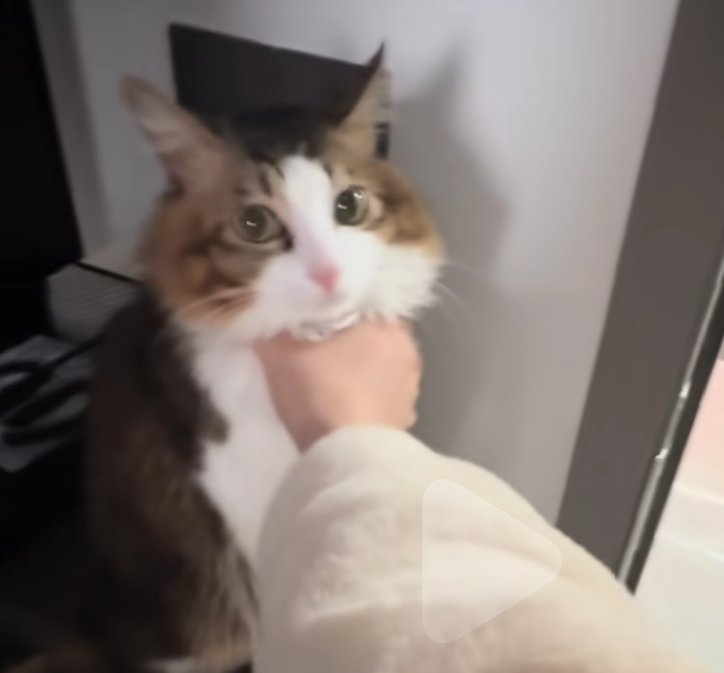
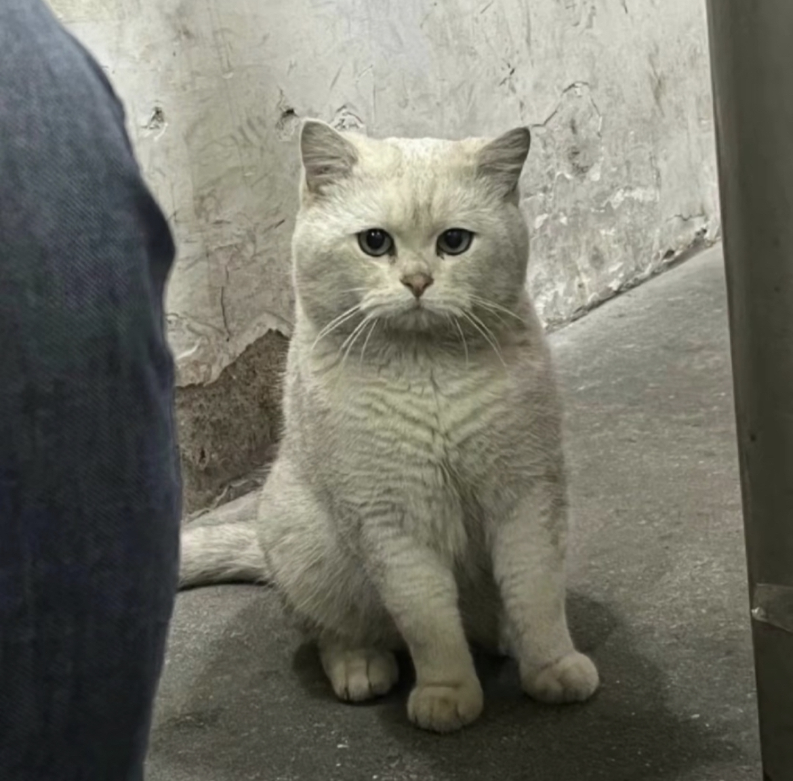
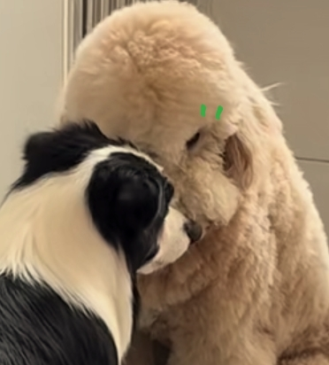
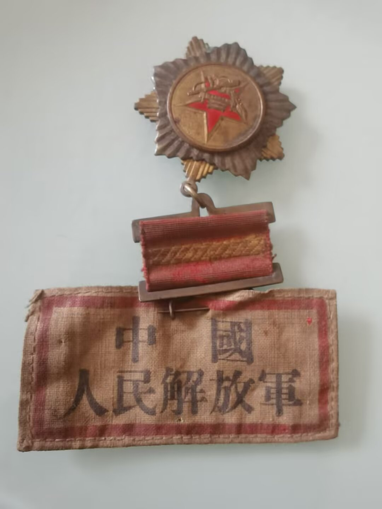
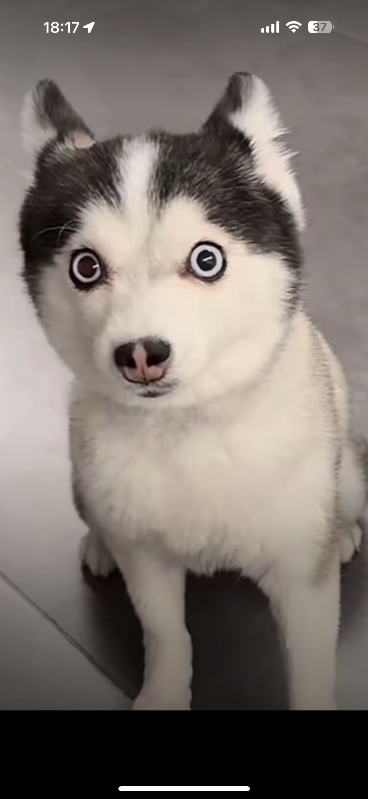

猫：哎盆油，打架归打架，空气给一下 
哈哈哈！这掐脖的熟练度
动作行云流水一气呵成[看]一看小猫平时就没少溜走
三只猫[泪奔]左手指纹开门 右手先从门缝伸进去锁喉 边开门边扫腿
一样一样的操作，稍不留神就溜出去，然后又怂怂得在外面嗷呜嗷呜地叫
这是一位漂泊的唱客，他在到处漂唱[捂脸]
这姐妹上辈子干了多少坏事？[捂脸]
云南这边已经开始变天了，
真的忘不了[舔屏][舔屏][舔屏]
兄弟你不叫牛博洋 你得叫牛博一
国家不是提倡多要孩子吗，我就要这个了[捂脸]
想到了这只猫[泣不成声] 
如果是人为的，请让这个人下辈子也长一只耳
百万漕工衣食所系，废漕改海断然不许。 其实都是为了自己的灰色收入。
把他当羊牧了吧[泪奔][泪奔][泪奔]
上帝不让小狗说话是有原因的，说话了真闹腾啊[暗中观察]
巨贵真的又大又怂，各个都很好撸[坏笑]
边牧在霸凌
黑白花真该挨收拾了，他在霸凌卷毛黄，卷毛黄跟他在一屋里很不舒服，其实很多边牧都这样，主人没有确立威严，他把自己当家里老大
卷毛黄：有点暧昧了，兄弟[干饭人] 
黑白花[微笑]干嘛欺负卷毛黄
在这物欲横流的社会，太需要一种激励人心，警示后人的声音了[感谢]刀郎带领一邦90后00后年轻人，唱响了埋在每个爱国人心里的声音[赞][赞][赞][赞][赞]
就爱看张旖旎大总管摇头晃脑的样子，太有气势了。[比心][比心][比心][赞][赞][赞][鼓掌][鼓掌][鼓掌]
春晚还排什么节目，直接刀郎团队上，保证收视率高
被沉寂了几十年的红歌，被刀郎唤醒了，观众们心情澎湃，情绪高昂，全场达到了高潮！了不起，刀郎先生，2025-刀郎，载入音乐文化史册！[赞][赞][赞]
看到了张旖旎先生也在开口唱歌，真好！伟大的刀郎先生，让演唱会充满了激情一一家国情怀，人生情怀，方方面面，包罗万象[赞][赞][赞][赞][赞][赞]
一首我们走在大路上，让我们心潮澎湃，激动万分，熟悉的声音，这就是正能量，这就是文化自信。[赞][赞][赞][赞][赞]
一大早刷到刀大师的歌，一首我们走在大路上，听着意气风发！
震撼!好听!最好听的，最震撼的《我们走在大路上》，没有之一
老刀行，我们走在大路上第一段唱原词[赞]
[赞][赞][赞]刀哥带着优秀的团队，带着我们走在大路上，弘扬伟大精神
一个60后向刀郎致敬！听到这熟悉的旋律让我激情澎湃，浑身鸡皮疙瘩都起来了，热泪盈眶，想起了我的青春岁月。
时隔二十年再次响起我们走在大路上，热血沸腾，每一个中国人都斗志昂扬
刀郎老师唱的这首我们走在大路上，让人热血沸腾，激情澎湃，点然了人们心中的梦想！
张旖旎也在开口唱歌[赞]
让那些明星艺人学学刀郎老师吧，唱些激动人心奋发上进的歌吧，这就是为啥我们农民都喜欢他了[赞]
听着听着竟然鼻子一酸，然后便热泪盈眶，老泪纵横了[流泪][流泪][流泪]
真正的国宝级音乐人，把祖国和自己的事业紧紧相融在一起，用音乐弘扬祖国的伟大和大众的爱国情怀[赞][赞][赞]
这些红歌现在的孩子有几个知道？他们知道的更多的是口水歌，为了这些红歌传唱度更高，，应该在公众场合都播放，谢谢刀郎，谢谢刀神[玫瑰][玫瑰][玫瑰][赞][赞][赞]
我建议让学校组织一下，都要去看刀郎演唱会[玫瑰][玫瑰][玫瑰][玫瑰][玫瑰][玫瑰]让我们的孩子们更加健康[赞][赞][赞]
这种红歌听了振奋人心啊，七零后比较熟悉[赞][赞][赞]
哇塞，现在很少有人唱这首老掉牙的红歌了，其实红歌很好听也激励我们向前进！[赞][赞][赞][赞]
后劲太大了，别让英雄流血又流泪。
中野独二师就是李云龙的部队，谷子地他们当时阻击的就是楚云飞的部队，他玩的炮就是老李的意大利炮，部队番号没了，是因为李云龙的部队当时被华野给要走了
最后吹号那个片段怎么没放出来[流泪] 真的看哭了
这个电影我看了N遍了，一直没看明白谷子地到底是怎么从那一战活下来的
集结号和1942我刷了好多遍 绝对的国产好电影 顶尖的！
没办法，不是人心打坏了。是正直的都跑前线去了。[流泪][流泪][流泪]
我爷爷是43年的连长，华野那个团的不清楚了，又有多少无名烈士呢！！！ 
你们可能体会不到那种一个部队打光了就剩一个人的感受。我外公就是一个部队就剩2个人。参加朝鲜战争。
中国也有不错的怪物片，749局 [赞]
韩国我有三不骂，电影，综艺，爱豆
影片上映后，很长一段时间韩国人不敢去汉江边玩[捂脸]
大馋丫头，你少吃点排骨，长肉嗷[大笑] 
奶奶：谁想吃不重要 我大孙儿来就行[皱眉][皱眉][皱眉]
奶奶在电话那头：我乖孙想吃啥，等我做一盆子的
这大眼睛跟他妈妈一模一样
为了放炮啥都干[尬笑]
大大的眼睛大大的疑问[疑问]
那年，七十九分钟上的阿圭罗哭的很伤心，那是我看曼城球的一年半，我只有没来由的揪心痛
我们明明就差一点[流泪][流泪][流泪]
该怎么形容过去
看过这张照片的人，宝宝都无病无灾，一生顺遂[感谢][感谢][感谢]
暖暖虽历经千辛万苦，，，但好在超级会挣钱[赞][赞][赞][赞][赞]
看看嘴巴鼻子和妈妈多像，祝福宝贝茁壮成长，健康快乐，[感谢][感谢]
Read more: